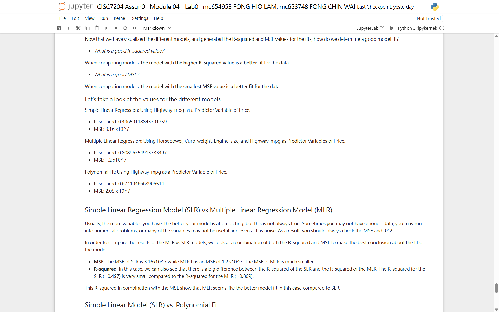

01
Assignment 1 · Modules 01–06
Regression Analysis for Pricing Prediction
- Problem
- How accurately can the market price of a product or property — used cars, laptops, and houses — be predicted from its features using regression models?
- Method
- Built a six-module pipeline with pandas and scikit-learn: data acquisition, wrangling with logged imputation decisions, EDA with correlation analysis, simple/multiple/polynomial regression, then cross-validation with Ridge regularisation tuned by
GridSearchCV. Applied the same workflow to a 21,613-row King County house-price dataset. - Result
engine-sizedominates automobile price (r = 0.872), while square footage dominates house price. A well-validated linear model beats more flexible ones: Ridge regression with a grid-searched alpha lifts the test-set R² compared with plain polynomial regression.- Deliverable
- Six module notebooks, the datasets and figures they consume, and a README that reproduces the whole analysis. Everything lives in the project repository.
- Limitation
- Trained on 1985 automobile data and a 2014–2015 housing window; the workflow transfers to other markets, the absolute price levels do not.
- Repository github.com/FongChinWai-Vivi/data-science-project
- Notebooks notebooks/ (Modules 01–06)
- Status completed

